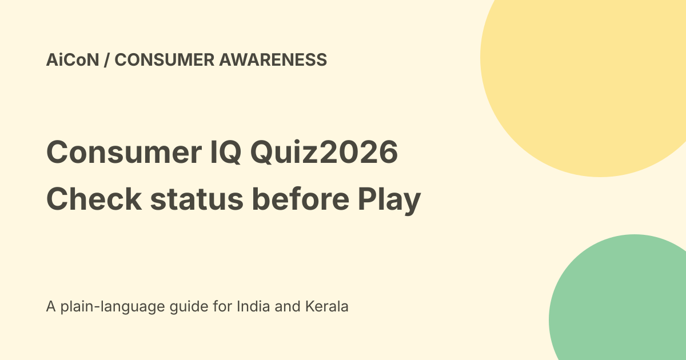

Consumer IQ Quiz 2026: current route, rules and prize limits
The official National Consumer IQ Quiz 2026 page lists a 26 November 2026, 11:45 pm end time, fifteen questions and three hundred seconds. The live page checked on 7 October showed MyGov and OTP login-to-play routes. A fetched text version also displayed Closed, so use the actual portal status before relying on participation being available.

Who runs it?
The page names the National University of Study and Research in Law, Ranchi, working with MyGov. The subject is consumer rights, responsibilities, unfair practices, digital issues and complaint mechanisms.
Use the specific official quiz page. A similarly named quiz on another website does not establish the same organisers or prize rules.
Dates and current access
The page lists 14 September 2026, 11:52 am as the start and 26 November 2026, 11:45 pm as the end. The listed end date is Thursday, 26 November 2026.
During the browser check, login routes were visible and no quiz was started. We did not authenticate or verify a logged-in attempt. A deadline on a page is not proof that every account can begin an entry.
Why the status needs checking
The fetched readable text included Closed even though the live browser displayed login-to-play controls. We do not silently choose the more convenient version.
Open the live page and follow the status shown in your own session. If it is closed or unavailable, do not assume the listed future date overrides that state.
Format and timing
The official terms say the quiz starts as soon as Play Quiz is clicked. There are up to fifteen questions within three hundred seconds, which is five minutes.
Prepare your connection and read the rules first. Do not press Play merely to explore if you are not ready to take your single permitted entry.
Who can participate?
The terms say Indian citizens can participate, but employees of NUSRL Ranchi and MyGov are not eligible.
Multiple entries from the same participant are not accepted. Submitted entries cannot be withdrawn. Read the exact rules before signing in.
Prize amounts
The official page lists ₹15,000 for first prize, ₹10,000 for second,₹5,000 for third and twenty consolation prizes of ₹1,000 each.
These are announced prizes, not earnings for every participant. No prize, certificate or payment entitlement was obtained in this check.
How winners are chosen
The terms put highest-scoring participants who finish within the limit into a central eligible pool. Winners are selected through system-generated automated randomisation.
A high score does not guarantee a prize. Do not describe the contest as a simple first-to-finish cash reward or promise money for participation.
Before an eligible attempt
- Open the exact official MyGov quiz link.
- Read dates, status, eligibility and terms.
- Check your connection and available five-minute window.
- Use one of the official login routes.
- Confirm that you have not already entered.
- Click Play only when ready.
- Answer independently and submit within the limit.
- Keep any confirmation shown by the portal.
This describes the published rules, not a tested logged-in submission. No entry was made for the user.
Fair participation
The terms disqualify unfair means, malpractice, impersonation, double participation and fraudulent activity. Do not outsource the live answers or use another person's identity.
Study consumer rights beforehand using public resources. A learning guide should not become an answer service during the contest.
Technical and payment boundaries
The terms say organisers are not responsible for lost or incomplete entries caused by technical issues. Proof of submission is not automatically proof of receipt.
No entry charge is shown on the checked page. Do not pay a third party to activate participation or share an OTP outside the official login process. A prize claim from an unrelated sender needs separate verification.
What changed since the original post?
We add the status conflict, exact one-entry and start-button rules, randomised prize selection and the absence of a verified certificate promise in the checked terms.
Frequently asked questions
Does a high score guarantee a prize?
No. The eligible pool is randomised.
Was the quiz played?
No.
Can I enter twice?
The terms reject multiple entries.
Sources: Official quiz, dates and terms. Checked 7 October 2026.